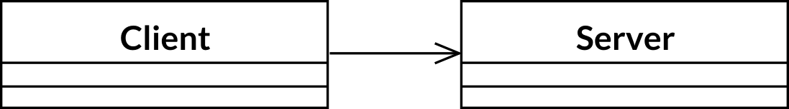

SOLID OOP - zasady solidnego programowania obiektowego#
SOLID to akronim powstały od pięciu zasad dobrego programowania zorientowanego obiektowo.
Zasada pojedynczej odpowiedzialności#
Zasada pojedynczej odpowiedzialności (Single-Responsibility Principle) – każda klasa lub moduł powinien mieć tylko jeden powód do zmiany.
Każdy obszar odpowiedzialności jest faktyczną osią zmian. Kiedy wymagania ulegają zmianie, zakres niezbędnych modyfikacji jest określany na podstawie obszarów odpowiedzialności przypisanych do poszczególnych klas. Jeśli pojedyncza klasa odpowiada za więcej niż jeden obszar jednocześnie, może istnieć więcej niż jeden powód jej modyfikowania. W takim przypadku, te rozłączne obszary są ze sobą powiązane. Zmiany jednego obszaru mogą osłabiać lub powstrzymywać funkcjonowanie w innym obszarze. Każdy taki związek ogranicza elastyczność projektów i prowadzi do nieoczekiwanych rezultatów zmian.
Przykład naruszenia zasady pojedynczej odpowiedzialności#
Klasa Employee łączy dwa obszary odpowiedzialności – reguły biznesowe oraz mechanizmy utrwalania danych.
{kind=link}
Reguły biznesowe z natury rzeczy bardzo często ulegają modyfikacjom. Jeżeli istnieje konieczność zmian mechanizmów utrwalania, przyczyny tych modyfikacji są zupełnie inne niż w przypadku reguł biznesowych.
Zasada otwarte-zamknięte#
Zasada otwarte-zamknięte (Open/Close Principle) – klasy powinny być otwarte na rozbudowę i zamknięte na modyfikacje.
Jeśli dysponujemy klasą o określonym zachowaniu, które działa prawidłowo, należy uniemożliwić wprowadzenie modyfikacji w jej działającym kodzie. W przypadku konieczności rozbudowy kodu (dodania nowej funkcjonalności), należy stworzyć klasy pochodne, w których można nadpisać wybrane metody i dostosować ich działanie do bieżących potrzeb. Choć nie można modyfikować kodu klasy (zasada zamknięte), to jednak jest ona otwarta na rozbudowę (zasada otwarte).
Wprowadzenie nowej funkcjonalności nie powinno również powodować zmian w kodzie klientów korzystających z niej.
Klasy otwarte na rozszerzanie powinny zawierać punkty rozszerzenia (extension points), poprzez które można podpiąć się do istniejącego kodu i dostarczyć nową funkcjonalność. Punkty rozszerzeń mogą być definiowane poprzez wyodrębnienie interfejsu określonej funkcjonalności.
Przykład naruszenia zasady OCP#
{kind=link}
W tym przypadku konkretna klasa Client wykorzystuje konkretną klasę Server. Klasy te są ze sobą silnie powiązane (strongly coupled).
Gdybyśmy chcieli, aby obiekt klasy Client wykorzystywał obiekt innej klasy serwera, musielibyśmy w klasie Client zmienić nazwę wykorzystywanej klasy serwera.
Można przekształcić ten projekt, tak aby stał się on zgodny z zasadą OCP stosując wzorzec Strategia. Wyodrębniamy interfejs funkcjonalności ClientInterface, która jest wykorzystywana przez klasę Client. Poprzez tak utworzony punkt rozszerzenia możemy podstawiać różne implementacje interfejsu bez konieczności zmiany kodu klienta. Wprowadzenie nowej funkcjonalności wiąże się w tym momencie z napisaniem nowej klasy implementującej interfej ClientInterface. Implementacja klasy Client pozostaje bez zmian.
{kind=link}
Zasada OCP jest kombinacją hermetyzacji i wyodrębniania. Określamy zachowania, które pozostają takie same, wyodrębniamy je i definiujemy w klasie bazowej, uniemożliwiając modyfikowanie tego kodu. Jeśli potrzebujemy nowego lub zmienionego zachowania, tworzymy klasę pochodną, która je obsłuży. Hermetyzujemy to, co ulega zmianom (zachowanie w klasach pochodnych), oddzielając od tych fragmentów aplikacji, które pozostają niezmienione (wspólne zachowanie zdefiniowane w klasie bazowej).
Zasada podstawiania Liskov#
Zasada podstawiania Liskov (Liskov Substitution Principle) – musi istnieć możliwość podstawiania typów pochodnych w miejsce ich typów bazowych.
LCP dotyczy prawidłowo zaprojektowanego dziedziczenia. Tworząc klasę pochodną, musimy być w stanie użyć jej zamiast klasy bazowej. Jeśli nie ma takiej możliwości, to dziedziczenie zostało nieprawidłowo użyte.
Jeśli zasada LSP nie jest spełniona dodanie nowej klasy do hierarchii klas wymusza zmiany w kodzie klientów korzystających z klasy bazowej lub interfejsu będącego na szczycie hierarchii.
Tak długo jak nie ma konieczności zmian w interfejsie, nie powinno być powodów do zmiany istniejącego kodu (kodu klientów).
Przykład naruszenia zasady podstawiania#
{kind=link}
Klient korzystający z klasy Rectangle ma możliwość niezależnego ustawienia szerokości oraz wysokości. Jeśli przekażemy klientowi obiekt typu Square za pośrednictwem interfejsu Rectangle, klient otrzyma niespodziewane zachowanie polegające na niejawnej zmianie drugiego wymiaru prostokąta. Taka sytuacja może doprowadzić do działania aplikacji w nieprawidłowym stanie.
Design by contract#
Definicja kontraktu między obiektem klienckim a obiektem dostarczającym funkcjonalności polega na zdefiniowaniu wymagań wstępnych (precondtions), wymagań końcowych (postconditions) oraz niezmienników dla każdej metody interfejsu.
Aby zasada LSP była zachowana:
warunki wstępne nie mogą być być bardziej restrykcyjne w typach pochodnych
warunki końcowe nie mogą być luźniejsze w typach pochodnych
niezmienniki muszą zostać zachowane
Zasada segregacji interfejsów#
Zasada segregacji interfejsów (Interface Segregation Principle) – klient nie powinien być zmuszany do zależności od metod, których nie używa.
Jeśli klient zależy od klasy zawierającej metodę, której ten klient nie używa, ale której używają pozostałe klasy klienckie, to zmiany tych klas będą miały wpływ na naszą klasę. Aby uniknąć tego rodzaju związków, należy podzielić interfejsy.
Przykład naruszenia zasady segregacji interfejsów#
{kind=link}
Najlepszym sposobem zapewnienia zgodności z zasadą ISP jest zastosowanie techniki dziedziczenia wielokrotnego. Mimo że obiekty klienckie dwóch klas bazowych mogą korzystać z tego samego interfejsu, żadna z tych klas nie jest zależna od tego interfejsu. Oznacza to, że obiekty kliencie korzystają z tego samego obiektu za pośrednictwem różnych interfejsów.
Poprawiony diagram klas zgodny z zasadą ISP:
Obiekty klienckie powinny zależeć wyłącznie od wywoływanych przez siebie metod. Można ten cel osiągnąć rozbijając interfejs “grubej” klasy na wiele mniejszych interfejsów właściwych dla poszczególnych klientów. Każdy taki interfejs deklaruje tylko te funkcje, które rzeczywiście są wywoływane przez danego klienta lub grupę klientów. W takim przypadku “gruba” klasa może dziedziczyć i implementować wszystkie interfejsy właściwe dla klientów. Opisany model eliminuje zależność obiektów klienckich od metod, których nie wywołują, i umożliwia zapewnienie wzajemnej niezależności samych klientów.
Zasada odwracania zależności#
Zasada odwracania zależności (Dependency Inversion Principle)
Moduły wysokopoziomowe nie powinny zależeć od modułów niskopoziomowych. Obie grupy modułów powinny zależeć od abstrakcji.
Abstrakcje nie powinny zależeć od szczegółowych rozwiązań. To szczegółowe rozwiązania powinny zależeć od abstrakcji.
Tradycyjnie programowanie proceduralne prowadzi do powstawania struktur złożoności, w których ogólna strategia jest uzależniona od szczegółowych rozwiązań w zakresie implementacji. Istnienie takich zależności jest o tyle niekorzystne, że czyni strategię wrażliwą na zmiany szczegółów. Programowanie obiektowe odwraca tę strukturę zależności w taki sposób, aby zarówno szczegóły, jak i strategie zależały od abstrakcji. Co więcej, w modelu obiektowym interfejsy usług są często przypisane do swoich klientów. Odwracanie zależności jest swoistym certyfikatem dobrego projektu obiektowego.
Zasada odwracania zależności jest kluczowym mechanizmem niskiego poziomu. Właściwe stosowanie tej zasady jest ważne, jeśli chcemy tworzyć frameworki wielokrotnego użytku. DIP ma także ogromny wpływ na odporność kodu źródłowego na przyszłe zmiany. Ponieważ zgodnie z tą zasadą abstrakcje i szczegółowe mechanizmy są od siebie izolowane, tak tworzony kod jest dużo prostszy w konserwacji.
Zasadę odwracania zależności możemy stosować za każdym razem, gdy jedna klasa wysyła komunikat do innej klasy.
Przykład naruszenia zasady DIP#
{kind=link}
Klasa ToggleButton bezpośrednio zależy od klasy LEDLight. Wysokopoziomowa strategia nie została właściwie oddzielona od niskopoziomowej implementacji. Abstrakcje nie zostały oddzielone od szczegółowych rozwiązań. Model ten można udoskonalić, odwracając zależność łączącą obiekty klas ToggleButton i LEDLight.
Poniżej przedstawiony jest model, w którym klasa ToggleButton zawiera odwołanie tylko do interfejsu nazwanego ISwitch – za jego pośrednictwem można włączać lub wyłączać różne urządzenia.
Interfejs ISwitch jest implementowany przez klasę LEDSwitch, która adaptuje niskopoziomową implementację LEDLight. Oznacza to, że od tej pory to klasa LEDSwitch zależy od klasy ToggleButton (a nie odwrotnie).